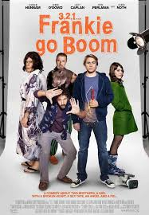
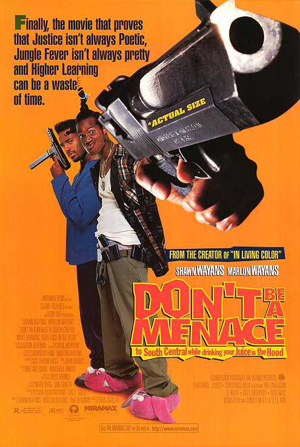
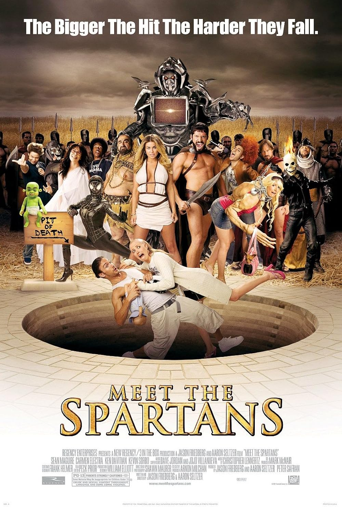

Movie Descriptions
Scary Movie

Rating: 8.5/10
Description: A parody of popular horror films, "Scary Movie" delivers a hilarious take on the genre, with absurd and over-the-top humor. It's a perfect choice for anyone who loves comedies with a dash of horror.
Disaster Movie

Rating: 7.8/10
Description: "Disaster Movie" is a satirical comedy that spoofs disaster films. It features a group of people trying to survive a series of natural and man-made disasters while humorously reflecting on popular culture.
Frankie Go Boom

Rating: 9.0/10
Description: A dark comedy about a man named Frankie who is forced to face the embarrassment of a video of him being posted online. The movie explores themes of redemption, embarrassment, and the consequences of modern media.
Rise of Planet of the Snakes

Rating: 8.0/10
Description: A spin-off of the "Planet of the Apes" series, this fictional tale imagines a world where genetically modified snakes rise to power. The action-packed plot delves into human interaction with animals and the consequences of genetic tampering.
Don't Be a Menace

Rating: 8.5/10
Description: This film is a spoof of many popular urban comedies. "Don't Be a Menace" blends parody, satire, and absurd humor to deliver a funny yet clever commentary on life in the inner city.
Meet the Spartans

Rating: 8.9/10
Description: A hilarious parody of the film "300," "Meet the Spartans" humorously critiques popular culture while following the journey of a small group of ancient Spartans. It's a fun, lighthearted watch with plenty of laughs.